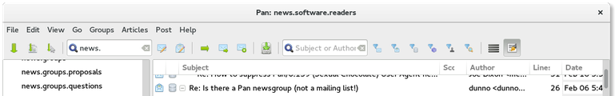

Proceeds from the tip jar go to Pan's programmers.)
What is Pan?

Pan is a Usenet newsreader that's good at both text and binaries. It supports offline reading, scoring and killfiles, yEnc, NZB, PGP handling, multiple servers, and secure connections. It's also the only Unix newsreader to get a perfect score on the Good Net-Keeping Seal of Approval evaluations.
It runs on Linux, BSD systems, Mac OS X, and Windows.
December 3, 2017 — Pan 0.143 "Quaint little villages here and there"
NEWS | Bug Tickets | Source | BinariesThis release improves security by allowing all TLS versions supported by GnuTLS in security connections, it fixes group pane resizing in GTK+ 3, and includes other GUI-related bug fixes and enhancements. This release also comes with an experimental port to GMime 3.0, which is a work in progress. All users are advised to upgrade to this latest version.
See NEWS for details on the changes in this release, and check the README file before upgrading. Feedback, bug reports, and patches are very much encouraged.
July 23, 2017 — Pan 0.142 "He slipped to Sam a double gin"
NEWS | Bug Tickets | Source | BinariesThis release fixes a number of smaller bugs and re-introduces built-in help as an optional feature, accessible from the Pan Help menu and requiring Yelp. Pan also no longer depends on intltool for UI translations, nor on gnome-common when building from sources. The optional GTK+ 3 port now depends on libsecret and gcr for password storage instead of the deprecated libgnome-keyring.
See NEWS for details on the changes in this release, and check the README file before upgrading. Feedback, bug reports, and patches are very much encouraged.
December 30, 2016 — Pan 0.141 "Tarzan's Death"
NEWS | Bug Tickets | Source | BinariesThis is an incremental release with a handful of bug fixes and enhancements that get us a little closer to 1.0.
See NEWS for details on the changes in this release. And don't forget to check the README file before upgrading. Feedback, bug reports and patches are very much encouraged.
March 24, 2016 — Pan 0.140 "Chocolate Salty Balls"
NEWS | Bug Tickets | Source | BinariesAfter almost four years of hiatus, here comes a new release of Pan, packed with bug fixes and feature enhancements that have piled up since the last release. We're not quite there yet to make it a 1.0 release but it's really close now.
See NEWS for details on the changes in this release. And don't forget to check the README file before upgrading.
June 30, 2012 — Pan 0.139: "Sexual Chocolate"
NEWS | Bug Tickets | Source | BinariesThis release is an intermediate release fixing some minor bugs before the Debian freeze. Enjoy! Everybody is, as always, encouraged to upgrade.
June 14, 2012 — Pan 0.138: "Der Gerät"
NEWS | Bug Tickets | Source | BinariesThis is another bugfix and feature enhancement release that contains certain UI improvements. Everybody using older versions of Pan is encouraged to upgrade. Please see the Bug Tickets or NEWS for details.
May 1, 2012 — Pan 0.137: "The Mattel and Mars Bar Quick Energy Chocobot Hour"
NEWS | Bug Tickets | Source | BinariesThis is a bugfix release for certain issues regarding race conditions with thread handling, which resulted in random errors and segmentation faults. Everybody using older versions of Pan is encouraged to upgrade. There have been some minor UI enhancements, too. Please see the Bug Tickets or NEWS for details.
April 8, 2012 — Pan 0.136: "Far too busy being delicious..."
NEWS | Source | BinariesThis release introduces a plethora of bugfixes and improvements, everybody using older versions of Pan is encouraged to upgrade. This version supports binary uploading, TLS (SSL) connections, PGP handling and other nice features.
June 5, 2011 — Pan 0.135: "Tomorrow I'll Wake Up and Scald Myself with Tea"
NEWS | Bug Tickets | Source | BinariesThis release introduces a support for creating a NZB file from the list of articles, optional support for GTK+ 3, and a number of other feature improvements and bugfixes. The code is based on the Pan bugfix & testing repository maintained by K. Haley; and it is recommended for everyone using older versions of Pan to upgrade.
February 15, 2011 — Pan 0.134: "Wait for Me"
NEWS | Bug Tickets | Source | BinariesThis release brings a large number of feature improvements and bugfixes that have accumulated over the last 30 months of release hiatus. The code is based on the Pan bugfix & testing repository maintained by K. Haley and it is recommended for everyone using older versions of Pan to upgrade.
August 1, 2008 — Pan 0.133: "House of Butterflies"
Release notes | Bug Tickets | Source | BinariesThis release is recommended for everyone using the rewrite betas: it contains an important security fix and build failures on modern compilers, as well as a handful of usability issues.
August 1, 2007 — Pan 0.132: "Waxed in Black"
Release notes | Bug Tickets | Source | BinariesThis release is recommended for everyone using the rewrite betas: it fixes some crashes, memory leaks, and attachment corruption and it speeds up loading and saving newsgroup headers on disk.
May 26, 2007 — Pan 0.131: "Ghosts: First Variation"
Release notes | Bug Tickets | Source | BinariesThis release is recommended for everyone using the rewrite betas: it fixes some crashes, memory leaks, and attachment corruption and it speeds up loading and saving newsgroup headers on disk.
May 19, 2007 — Pan 0.130: "Hyperbolicsyllabicsesquedalymistic"
Release notes | Bug Tickets | Source | BinariesThis release uses significantly less memory on 64-bit machines, loads and saves articles faster, and has the usual assortment of tweaks, additions, and bug fixes.
May 6, 2007 — Pan 0.129: "Benson & Hedges Moscow Gold"
Release notes | Bug Tickets | Source | BinariesThis release cheerfully inches a little closer to 1.0. A nasty 0.128 crash was fixed, and a handful of requested features have been added.
April 21, 2007 — Pan 0.128: "SR/CL: Leitmotiv: Toynbee Idea"
Release notes | Bug Tickets | Source | BinariesThis is another incremental release -- a handful of bugfixes, a little more polish, and a couple of new features.